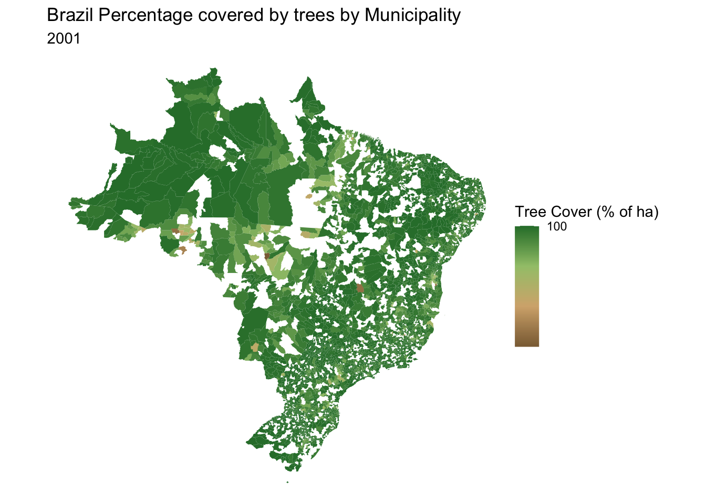
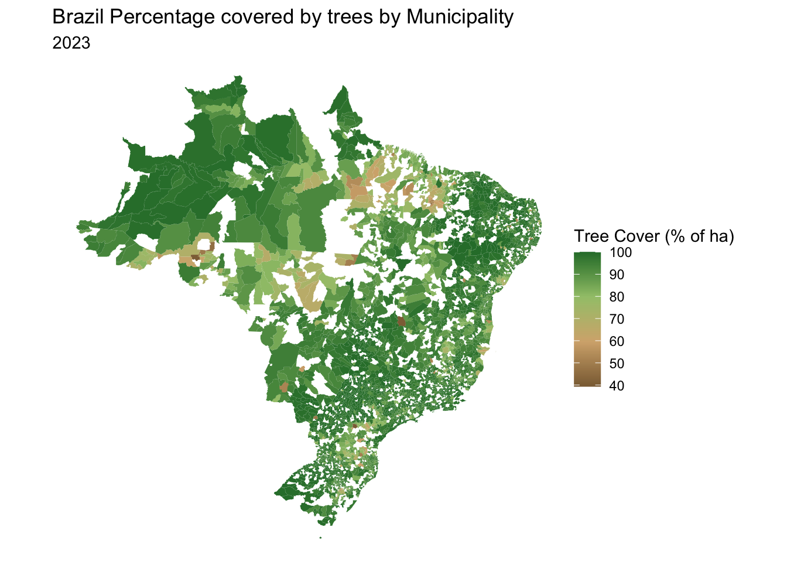
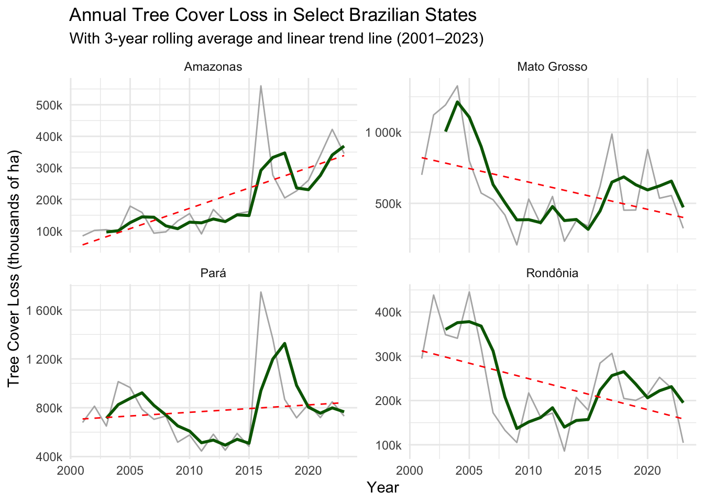
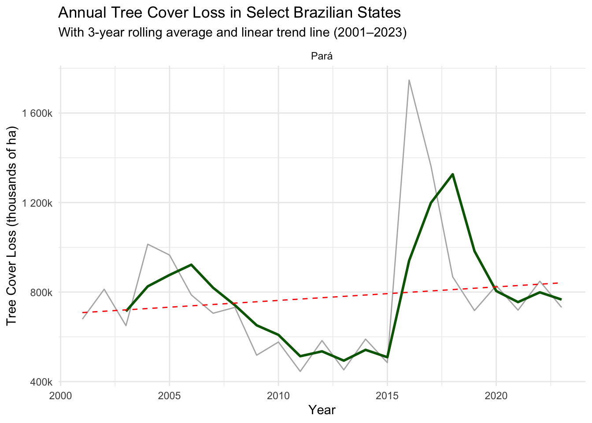

library(tidyverse)
library(dplyr)
# Plots
library(ggplot2)
library(plotly)
library(sf) # geo-spatial plots
library(geobr) # Geo-spatial info specifically for Brazil
library(zoo) # Rolling average
library(scales) # labels in kMilestone 4 - Natalia
Libraries
Data Import and Wrangling
datasets <- list_geobr()
# Municipalities geometries
muni_sf <- geobr::read_municipality(year = 2010,
showProgress = FALSE)
# Tree cover loss for all countries and all thresholds
tree_cover_loss <- read.csv("../../data/raw/Brazil_TreeCoverLoss.csv")
# Tree cover loss only for Brazil and threshold = 30
tree_cover_loss <- tree_cover_loss %>% filter(threshold == 30)
tcl_brazil <- tree_cover_loss %>% select(-threshold, -country)
# Tree cover loss by municipality
tcl_brazil <- tcl_brazil %>%
mutate(name_muni = subnational2)
mapping_BR <- tcl_brazil %>%
left_join(muni_sf, by = "name_muni")
head(mapping_BR) subnational1 subnational2 area_ha extent_2000_ha extent_2010_ha
1 Acre Acrelândia 158571 122285 92076
2 Acre Assis Brazil 289663 284190 281522
3 Acre Brasiléia 437224 376074 355323
4 Acre Bujari 346763 283041 269722
5 Acre Capixaba 173770 126374 112820
6 Acre Cruzeiro do Sul 791898 776282 769456
gain_2000.2020_ha tc_loss_ha_2001 tc_loss_ha_2002 tc_loss_ha_2003
1 989 4768 3276 2643
2 469 678 715 301
3 2372 4477 4410 2634
4 5713 3597 3337 1824
5 1548 2619 5719 1062
6 3284 1998 1923 2158
tc_loss_ha_2004 tc_loss_ha_2005 tc_loss_ha_2006 tc_loss_ha_2007
1 4675 13356 2524 1816
2 966 716 144 438
3 6129 12094 1413 1824
4 4819 11538 2213 1988
5 2046 3640 1732 616
6 2513 5830 1219 2257
tc_loss_ha_2008 tc_loss_ha_2009 tc_loss_ha_2010 tc_loss_ha_2011
1 4119 2152 2866 1082
2 201 313 547 245
3 1672 1870 2834 2757
4 2998 1439 2679 2358
5 1032 703 1324 2512
6 2644 2183 1350 883
tc_loss_ha_2012 tc_loss_ha_2013 tc_loss_ha_2014 tc_loss_ha_2015
1 1106 1390 2110 2036
2 833 442 838 563
3 5342 4970 6049 4374
4 2069 1903 2489 2255
5 1805 1656 1511 1458
6 3476 2561 3404 1526
tc_loss_ha_2016 tc_loss_ha_2017 tc_loss_ha_2018 tc_loss_ha_2019
1 3127 2654 1700 2142
2 792 826 790 1076
3 6991 9147 8758 8816
4 3382 3710 3825 3123
5 3670 2570 2578 2308
6 4220 4702 3009 3310
tc_loss_ha_2020 tc_loss_ha_2021 tc_loss_ha_2022 tc_loss_ha_2023
1 1620 3316 2924 1921
2 666 682 601 443
3 7362 8829 8452 3320
4 4522 5150 6192 2891
5 2889 3427 2907 1221
6 3600 5655 5446 3691
name_muni code_muni code_state abbrev_state
1 Acrelândia 1200013 12 AC
2 Assis Brazil NA <NA> <NA>
3 Brasiléia 1200104 12 AC
4 Bujari 1200138 12 AC
5 Capixaba 1200179 12 AC
6 Cruzeiro do Sul NA <NA> <NA>
geom
1 MULTIPOLYGON (((-67.14117 -...
2 MULTIPOLYGON EMPTY
3 MULTIPOLYGON (((-69.58835 -...
4 MULTIPOLYGON (((-68.31643 -...
5 MULTIPOLYGON (((-67.84667 -...
6 MULTIPOLYGON EMPTY# Join all tc_loss_ha in one column
data_long <- mapping_BR %>%
select(subnational1, subnational2, name_muni, code_muni, abbrev_state, area_ha, starts_with("tc_loss_ha_"), geom) %>%
pivot_longer(cols = starts_with("tc_loss_ha_"),
names_to = "year",
values_to = "loss_ha") %>%
mutate(year = as.numeric(gsub("tc_loss_ha_", "", year)),
loss_pct = (loss_ha / area_ha) * 100)
# Summarize total loss per state per year
state_loss <- data_long %>%
group_by(subnational1, year) %>%
summarise(total_loss = sum(loss_ha, na.rm = TRUE), .groups = "drop") %>%
group_by(subnational1) %>%
arrange(year) %>%
mutate(roll_avg_3yr = rollmean(total_loss, k = 3, fill = NA, align = "right"))
head(state_loss)# A tibble: 6 × 4
# Groups: subnational1 [6]
subnational1 year total_loss roll_avg_3yr
<chr> <dbl> <int> <dbl>
1 Acre 2001 76696 NA
2 Alagoas 2001 8404 NA
3 Amapá 2001 14198 NA
4 Amazonas 2001 84391 NA
5 Bahia 2001 160029 NA
6 Ceará 2001 14471 NAcum_perc <- data_long %>%
arrange(abbrev_state, name_muni, year) %>% # Ensure it's ordered by state, municipality, and year
group_by(abbrev_state, name_muni) %>%
mutate(remaining_tree_pct = 100 - cumsum(loss_pct)) %>%
ungroup()
# Check the first few rows
head(cum_perc)# A tibble: 6 × 11
subnational1 subnational2 name_muni code_muni abbrev_state area_ha
<chr> <chr> <chr> <dbl> <chr> <int>
1 Acre Acrelândia Acrelândia 1200013 AC 158571
2 Acre Acrelândia Acrelândia 1200013 AC 158571
3 Acre Acrelândia Acrelândia 1200013 AC 158571
4 Acre Acrelândia Acrelândia 1200013 AC 158571
5 Acre Acrelândia Acrelândia 1200013 AC 158571
6 Acre Acrelândia Acrelândia 1200013 AC 158571
# ℹ 5 more variables: geom <MULTIPOLYGON [°]>, year <dbl>, loss_ha <int>,
# loss_pct <dbl>, remaining_tree_pct <dbl>Visuals
First two were too similar to Nibia’s, so we thought we needed a different approach, hence the line plot.
earth_colors <- c("#8b6c42", "#d5b07c", "#a2c579", "#2c7c36")# Base ggplot code for Tree ccoverage
data_2001 <- cum_perc %>%
filter(cum_perc$year == 2001)
tc_2001_1 <- ggplot() +
geom_sf(data = data_2001, aes(fill = remaining_tree_pct, geometry = geom), color = NA) +
labs(title = paste("BRAZIL Tree Cover Loss 2001 by Municipality", sep = "")) +
scale_fill_gradientn(colors = earth_colors, name = "Tree Cover (ha)", breaks = c(40, 50, 60, 70, 80, 90, 100), labels = scales::comma) +
theme_void()
data_2023 <- cum_perc %>%
filter(cum_perc$year == 2023)
tc_2023_1 <- ggplot() +
geom_sf(data = data_2023, aes(fill = remaining_tree_pct, geometry = geom), color = NA) +
labs(title = paste("BRAZIL Tree Cover Loss 2023 by Municipality", sep = "")) +
scale_fill_gradientn(colors = earth_colors, name = "Tree Cover (ha)", breaks = c(40, 50, 60, 70, 80, 90, 100), labels = scales::comma) +
theme_void()
tc_2001_1
tc_2023_1# Function with applied base code
plot_tcl <- function(new_year){
data_new <- cum_perc %>%
filter(cum_perc$year == new_year)
ggplot() +
geom_sf(data = data_new, aes(fill = remaining_tree_pct, geometry = geom), color = NA) +
labs(title = paste("Brazil Percentage covered by trees by Municipality", sep = ""),
subtitle = new_year) +
scale_fill_gradientn(colors = earth_colors, name = "Tree Cover (% of ha)", breaks = c(40, 50, 60, 70, 80, 90, 100), labels = scales::comma) +
theme_void()
}
tc_2001 <- plot_tcl(2001)
tc_2001 
tc_2023 <- plot_tcl(2023)
tc_2023
# ggsave(filename = "Tree cover 2001.jpg", plot = tc_2001)
# ggsave(filename = "Tree cover 2023.jpg", plot = tc_2023)example_states <- c("Amazonas", "Pará", "Mato Grosso", "Rondônia")
# Plot annual tree cover loss
annual_tc_loss <- function(state){
ggplot(filter(state_loss, subnational1 %in% state), aes(x = year, y = total_loss)) +
geom_line(color = "gray70") +
geom_line(aes(y = roll_avg_3yr), color = "darkgreen", size = 1) +
geom_smooth(method = "lm", se = FALSE, linetype = "dashed", color = "red", linewidth = 0.5) +
facet_wrap(~ subnational1, scales = "free_y") +
scale_y_continuous(
labels = label_number(scale = 1/1000, suffix = "k", accuracy = 1)
) +
labs(
title = "Annual Tree Cover Loss in Select Brazilian States",
subtitle = "With 3-year rolling average and linear trend line (2001–2023)",
y = "Tree Cover Loss (thousands of ha)",
x = "Year"
) +
theme_minimal()
}
multiple_states <- annual_tc_loss(example_states)
one_state <- annual_tc_loss("Pará")
multiple_states`geom_smooth()` using formula = 'y ~ x'
one_state`geom_smooth()` using formula = 'y ~ x'
#ggsave(filename = "plot_example.jpg", plot = one_state)